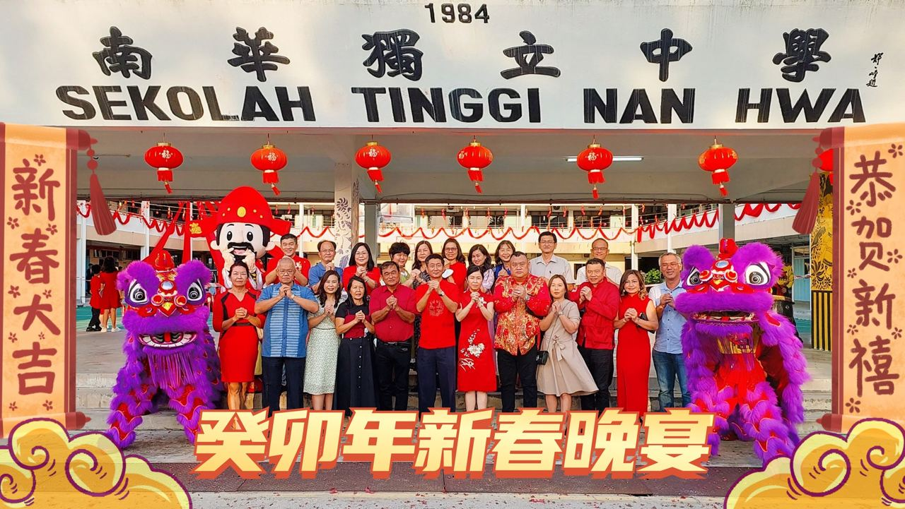
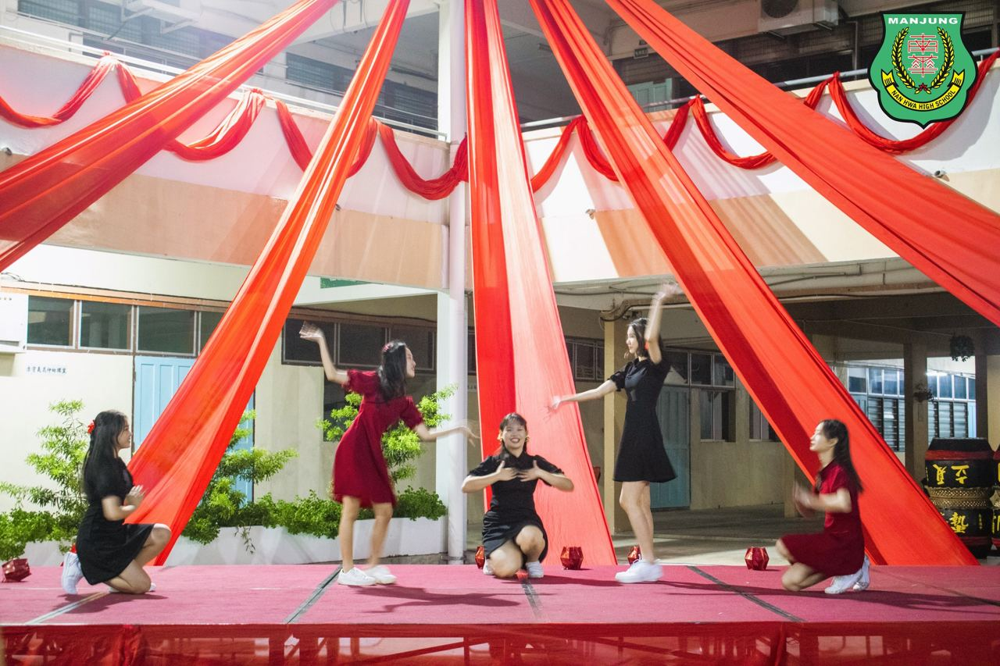
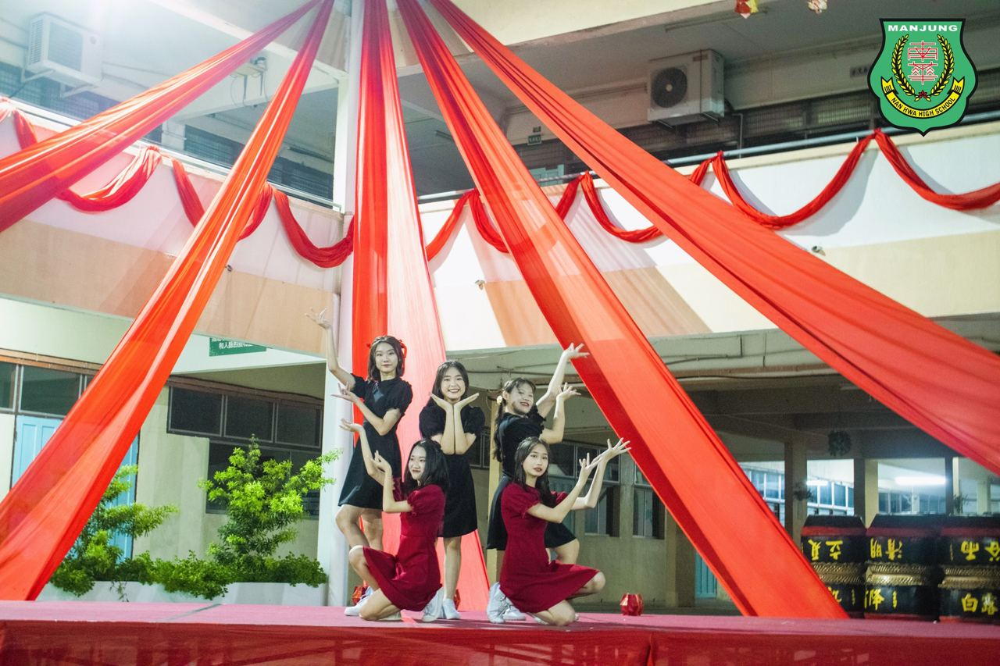
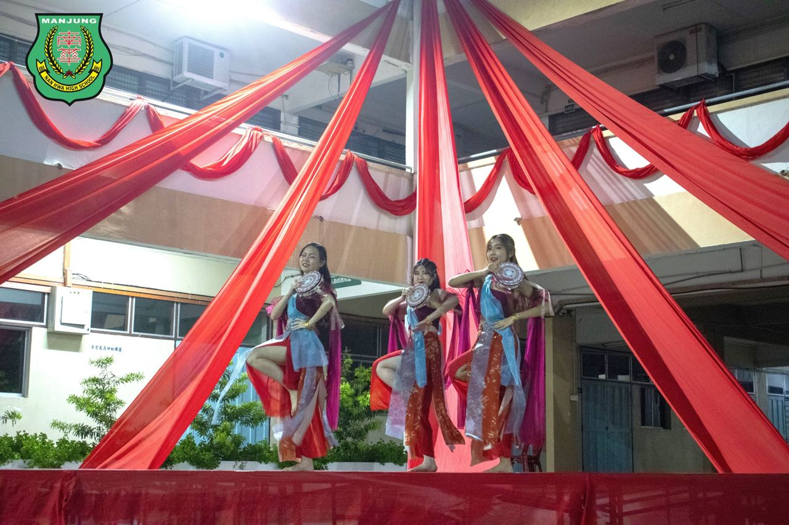
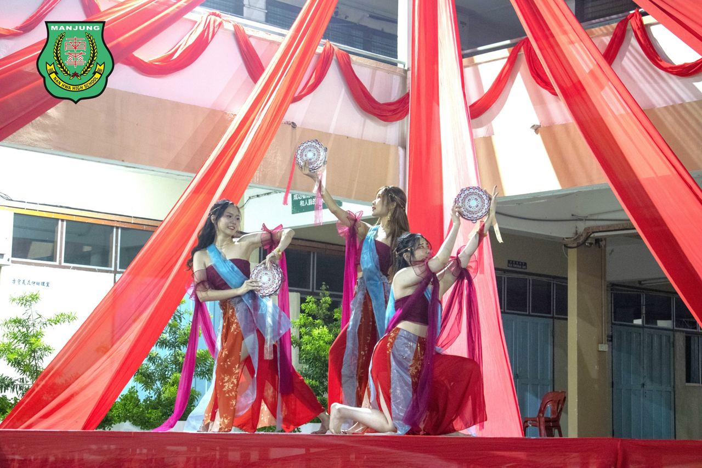
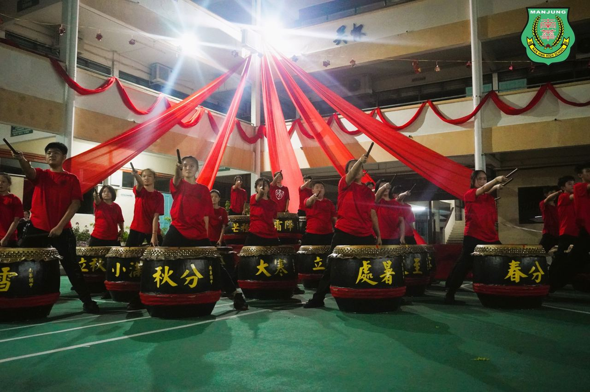
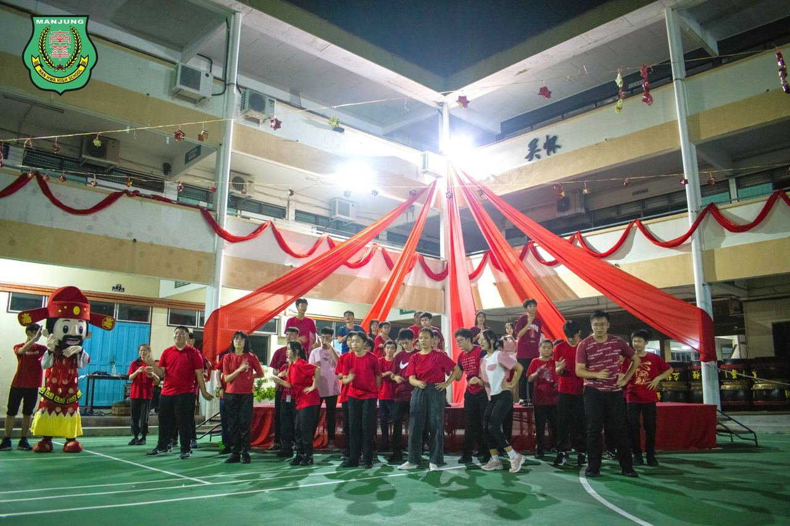
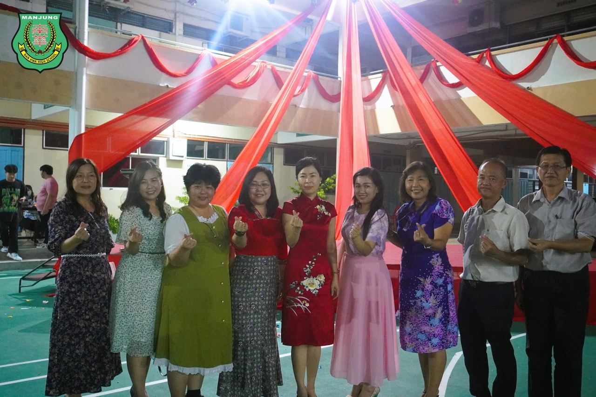

南华独中宿舍自治会办新春晚宴贺癸卯年
南华独中宿舍自治会办新春晚宴贺癸卯年
曼绒南华独中宿舍自治会每年都会举办新春晚宴，广邀南华独中董家教职员生、宿舍生亲友家长及外宾出席齐贺新春佳节，晚宴现场除了设有流水席招待，也有来自校友会代表、学会团体、宿舍新生献上精彩的表演，为晚宴助兴。
南华独中董事长颜登逸先生致辞中表示，南华独中宿舍自治会透过举办各种常年活动，形成紧密的凝聚力与向心力。新进的宿舍生也能透过举办活动，向哥学姐取经学习。他强调，“南华独中就像学生的第二个家”这句比喻套用在宿舍生身上极为传神，住在校园内的寄宿生可说是这个“家”最核心的“家庭成员”，为此特别嘱咐宿舍生要时刻守护这个家。
南华独中宿舍自治会小组主席高级拿督叶绍利致辞中不忘叮嘱全体宿舍生要群策群力、上下一心，共同打造优质的住宿环境，“只有齐心协力，宿舍才能走入学生心里，建立对宿舍的归属感，那么这个温暖大家庭才可以一直延续下去。”
南华独中校长陈丽冰博士在致辞中感谢董事会高瞻远瞩的领导和社会各界朋友的关心和厚爱，助南华独中在最短的时间内走出后疫情的冲击。陈校长表示，在过去的一年本校开展了校本与选修课程、举办了校园开放日、学习成果等，获得了外界一致的好评，“孩子们在老师的带领下，走出斗大的教室，展示在大众面前，证明了学习不仅仅在教室，天空之下处处是教育。”
#宿舍自治会 #新春晚宴 #癸卯年
#南华独中 #曼绒 #实兆远







